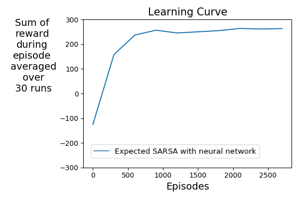

Assignment 2 - Implement your agent
Welcome to Course 4, Programming Assignment 2! We have learned about reinforcement learning algorithms for prediction and control in previous courses and extended those algorithms to large state spaces using function approximation. One example of this was in assignment 2 of course 3 where we implemented semi-gradient TD for prediction and used a neural network as the function approximator. In this notebook, we will build a reinforcement learning agent for control, again using a neural network for function approximation. This combination of neural network function approximators and reinforcement learning algorithms, often referred to as Deep RL, is an active area of research and has led to many impressive results (e. g., AlphaGo: https://deepmind.com/research/case-studies/alphago-the-story-so-far).
In this assignment, you will:
- Extend the neural network code from assignment 2 of course 3 to output action-values instead of state-values.
- Write up the Adam algorithm for neural network optimization.
- Understand experience replay buffers.
- Implement Softmax action-selection.
- Build an Expected Sarsa agent by putting all the pieces together.
- Solve Lunar Lander with your agent.
Packages
- numpy : Fundamental package for scientific computing with Python.
- matplotlib : Library for plotting graphs in Python.
- RL-Glue, BaseEnvironment, BaseAgent : Library and abstract classes to inherit from for reinforcement learning experiments.
- LunarLanderEnvironment : An RLGlue environment that wraps a LundarLander environment implementation from OpenAI Gym.
- collections.deque: a double-ended queue implementation. We use deque to implement the experience replay buffer.
- copy.deepcopy: As objects are not passed by value in python, we often need to make copies of mutable objects. copy.deepcopy allows us to make a new object with the same contents as another object. (Take a look at this link if you are interested to learn more: https://robertheaton.com/2014/02/09/pythons-pass-by-object-reference-as-explained-by-philip-k-dick/)
- tqdm : A package to display progress bar when running experiments
- os: Package used to interface with the operating system. Here we use it for creating a results folder when it does not exist.
- shutil: Package used to operate on files and folders. Here we use it for creating a zip file of the results folder.
- plot_script: Used for plotting learning curves using matplotlib.
1 | # Do not modify this cell! |
Section 1: Action-Value Network
This section includes the function approximator that we use in our agent, a neural network. In Course 3 Assignment 2, we used a neural network as the function approximator for a policy evaluation problem. In this assignment, we will use a neural network for approximating the action-value function in a control problem. The main difference between approximating a state-value function and an action-value function using a neural network is that in the former the output layer only includes one unit whereas in the latter the output layer includes as many units as the number of actions.
In the cell below, you will specify the architecture of the action-value neural network. More specifically, you will specify self.layer_size in the __init__() function.
We have already provided get_action_values() and get_TD_update() methods. The former computes the action-value function by doing a forward pass and the latter computes the gradient of the action-value function with respect to the weights times the TD error. These get_action_values() and get_TD_update() methods are similar to the get_value() and get_gradient() methods that you implemented in Course 3 Assignment 2. The main difference is that in this notebook, they are designed to be applied to batches of states instead of one state. You will later use these functions for implementing the agent.
1 | # Work Required: Yes. Fill in the code for layer_sizes in __init__ (~1 Line). |
Run the cell below to test your implementation of the __init__() function for ActionValueNetwork:
1 | # Do not modify this cell! |
layer_sizes: [5, 20, 3]
Passed the asserts! (Note: These are however limited in scope, additional testing is encouraged.)
Expected output:
layer_sizes: [ 5 20 3]
Section 2: Adam Optimizer
In this assignment, you will use the Adam algorithm for updating the weights of your action-value network. As you may remember from Course 3 Assignment 2, the Adam algorithm is a more advanced variant of stochastic gradient descent (SGD). The Adam algorithm improves the SGD update with two concepts: adaptive vector stepsizes and momentum. It keeps running estimates of the mean and second moment of the updates, denoted by $\mathbf{m}$ and $\mathbf{v}$ respectively:
Here, $\beta_m$ and $\beta_v$ are fixed parameters controlling the linear combinations above and $g_t$ is the update at time $t$ (generally the gradients, but here the TD error times the gradients).
Given that $\mathbf{m}$ and $\mathbf{v}$ are initialized to zero, they are biased toward zero. To get unbiased estimates of the mean and second moment, Adam defines $\mathbf{\hat{m}}$ and $\mathbf{\hat{v}}$ as:
The weights are then updated as follows:
Here, $\alpha$ is the step size parameter and $\epsilon$ is another small parameter to keep the denominator from being zero.
In the cell below, you will implement the __init__() and update_weights() methods for the Adam algorithm. In __init__(), you will initialize self.m and self.v. In update_weights(), you will compute new weights given the input weights and an update $g$ (here td_errors_times_gradients) according to the equations above.
1 | ### Work Required: Yes. Fill in code in __init__ and update_weights (~9-11 Lines). |
Run the following code to test your implementation of the __init__() function:
1 | # Do not modify this cell! |
m[0]["W"] shape: (5, 2)
m[0]["b"] shape: (1, 2)
m[1]["W"] shape: (2, 3)
m[1]["b"] shape: (1, 3)
v[0]["W"] shape: (5, 2)
v[0]["b"] shape: (1, 2)
v[1]["W"] shape: (2, 3)
v[1]["b"] shape: (1, 3)
Passed the asserts! (Note: These are however limited in scope, additional testing is encouraged.)
Expected output:
m[0]["W"] shape: (5, 2)
m[0]["b"] shape: (1, 2)
m[1]["W"] shape: (2, 3)
m[1]["b"] shape: (1, 3)
v[0]["W"] shape: (5, 2)
v[0]["b"] shape: (1, 2)
v[1]["W"] shape: (2, 3)
v[1]["b"] shape: (1, 3)
Run the following code to test your implementation of the update_weights() function:
1 | # Do not modify this cell! |
updated_weights[0]["W"]
[[-1.03112528 2.08618453]
[-0.15531623 0.02412129]
[-0.76656476 -0.65405898]
[-0.92569612 -0.24916335]
[-0.92180119 0.72137957]]
updated_weights[0]["b"]
[[-0.44392532 -0.69588495]]
updated_weights[1]["W"]
[[ 0.13962892 0.48820826 0.41311548]
[ 0.3958054 -0.20738072 -0.47172585]]
updated_weights[1]["b"]
[[-0.48917533 -0.61934122 -1.48771198]]
Passed the asserts! (Note: These are however limited in scope, additional testing is encouraged.)
Expected output:
updated_weights[0]["W"]
[[-1.03112528 2.08618453]
[-0.15531623 0.02412129]
[-0.76656476 -0.65405898]
[-0.92569612 -0.24916335]
[-0.92180119 0.72137957]]
updated_weights[0]["b"]
[[-0.44392532 -0.69588495]]
updated_weights[1]["W"]
[[ 0.13962892 0.48820826 0.41311548]
[ 0.3958054 -0.20738072 -0.47172585]]
updated_weights[1]["b"]
[[-0.48917533 -0.61934122 -1.48771198]]
Section 3: Experience Replay Buffers
In Course 3, you implemented agents that update value functions once for each sample. We can use a more efficient approach for updating value functions. You have seen an example of an efficient approach in Course 2 when implementing Dyna. The idea behind Dyna is to learn a model using sampled experience, obtain simulated experience from the model, and improve the value function using the simulated experience.
Experience replay is a simple method that can get some of the advantages of Dyna by saving a buffer of experience and using the data stored in the buffer as a model. This view of prior data as a model works because the data represents actual transitions from the underlying MDP. Furthermore, as a side note, this kind of model that is not learned and simply a collection of experience can be called non-parametric as it can be ever-growing as opposed to a parametric model where the transitions are learned to be represented with a fixed set of parameters or weights.
We have provided the implementation of the experience replay buffer in the cell below. ReplayBuffer includes two main functions: append() and sample(). append() adds an experience transition to the buffer as an array that includes the state, action, reward, terminal flag (indicating termination of the episode), and next_state. sample() gets a batch of experiences from the buffer with size minibatch_size.
You will use the append() and sample() functions when implementing the agent.
1 | # Do not modify this cell! |
Section 4: Softmax Policy
In this assignment, you will use a softmax policy. One advantage of a softmax policy is that it explores according to the action-values, meaning that an action with a moderate value has a higher chance of getting selected compared to an action with a lower value. Contrast this with an $\epsilon$-greedy policy which does not consider the individual action values when choosing an exploratory action in a state and instead chooses randomly when doing so.
The probability of selecting each action according to the softmax policy is shown below:
where $\tau$ is the temperature parameter which controls how much the agent focuses on the highest valued actions. The smaller the temperature, the more the agent selects the greedy action. Conversely, when the temperature is high, the agent selects among actions more uniformly random.
Given that a softmax policy exponentiates action values, if those values are large, exponentiating them could get very large. To implement the softmax policy in a numerically stable way, we often subtract the maximum action-value from the action-values. If we do so, the probability of selecting each action looks as follows:
In the cell below, you will implement the softmax() function. In order to do so, you could break the above computation into smaller steps:
- compute the preference, $H(a)$, for taking each action by dividing the action-values by the temperature parameter $\tau$,
- subtract the maximum preference across the actions from the preferences to avoid overflow, and,
- compute the probability of taking each action.
1 | def softmax(action_values, tau=1.0): |
Run the cell below to test your implementation of the softmax() function:
1 | # Do not modify this cell! |
action_probs [[0.25849645 0.01689625 0.05374514 0.67086216]
[0.84699852 0.00286345 0.13520063 0.01493741]]
Passed the asserts! (Note: These are however limited in scope, additional testing is encouraged.)
Expected output:
action_probs [[0.25849645 0.01689625 0.05374514 0.67086216]
[0.84699852 0.00286345 0.13520063 0.01493741]]
Section 5: Putting the pieces together
In this section, you will combine components from the previous sections to write up an RL-Glue Agent. The main component that you will implement is the action-value network updates with experience sampled from the experience replay buffer.
At time $t$, we have an action-value function represented as a neural network, say $Q_t$. We want to update our action-value function and get a new one we can use at the next timestep. We will get this $Q_{t+1}$ using multiple replay steps that each result in an intermediate action-value function $Q_{t+1}^{i}$ where $i$ indexes which replay step we are at.
In each replay step, we sample a batch of experiences from the replay buffer and compute a minibatch Expected-SARSA update. Across these N replay steps, we will use the current “un-updated” action-value network at time $t$, $Q_t$, for computing the action-values of the next-states. This contrasts using the most recent action-values from the last replay step $Q_{t+1}^{i}$. We make this choice to have targets that are stable across replay steps. Here is the pseudocode for performing the updates:
As you can see in the pseudocode, after sampling a batch of experiences, we do many computations. The basic idea however is that we are looking to compute a form of a TD error. In order to so, we can take the following steps:
- compute the action-values for the next states using the action-value network $Q_{t}$,
- compute the policy $\pi(b | s’)$ induced by the action-values $Q_{t}$ (using the softmax function you implemented before),
- compute the Expected sarsa targets $r + \gamma \left(\sum_{b} \pi(b | s’) Q_t(s’, b)\right)$,
- compute the action-values for the current states using the latest $Q_{t + 1}$, and,
- compute the TD-errors with the Expected Sarsa targets.
For the third step above, you can start by computing $\pi(b | s’) Q_t(s’, b)$ followed by summation to get $\hat{v}_\pi(s’) = \left(\sum_{b} \pi(b | s’) Q_t(s’, b)\right)$. $\hat{v}_\pi(s’)$ is an estimate of the value of the next state. Note for terminal next states, $\hat{v}_\pi(s’) = 0$. Finally, we add the rewards to the discount times $\hat{v}_\pi(s’)$.
You will implement these steps in the get_td_error() function below which given a batch of experiences (including states, next_states, actions, rewards, terminals), fixed action-value network (current_q), and action-value network (network), computes the TD error in the form of a 1D array of size batch_size.
1 | ### Work Required: Yes. Fill in code in get_td_error (~9 Lines). |
Run the following code to test your implementation of the get_td_error() function:
1 | # Do not modify this cell! |
Passed the asserts! (Note: These are however limited in scope, additional testing is encouraged.)
Now that you implemented the get_td_error() function, you can use it to implement the optimize_network() function. In this function, you will:
- get the TD-errors vector from
get_td_error(), - make the TD-errors into a matrix using zeroes for actions not taken in the transitions,
- pass the TD-errors matrix to the
get_TD_update()function of network to calculate the gradients times TD errors, and, - perform an ADAM optimizer step.
1 | ### Work Required: Yes. Fill in code in optimize_network (~2 Lines). |
Run the following code to test your implementation of the optimize_network() function:
1 | # Do not modify this cell! |
Passed the asserts! (Note: These are however limited in scope, additional testing is encouraged.)
Now that you implemented the optimize_network() function, you can implement the agent. In the cell below, you will fill the agent_step() and agent_end() functions. You should:
- select an action (only in
agent_step()), - add transitions (consisting of the state, action, reward, terminal, and next state) to the replay buffer, and,
- update the weights of the neural network by doing multiple replay steps and calling the
optimize_network()function that you implemented above.
1 | ### Work Required: Yes. Fill in code in agent_step and agent_end (~7 Lines). |
Run the following code to test your implementation of the agent_step() function:
1 | # Do not modify this cell! |
Passed the asserts! (Note: These are however limited in scope, additional testing is encouraged.)
Run the following code to test your implementation of the agent_end() function:
1 | # Do not modify this cell! |
Passed the asserts! (Note: These are however limited in scope, additional testing is encouraged.)
Section 6: Run Experiment
Now that you implemented the agent, we can use it to run an experiment on the Lunar Lander problem. We will plot the learning curve of the agent to visualize learning progress. To plot the learning curve, we use the sum of rewards in an episode as the performance measure. We have provided for you the experiment/plot code in the cell below which you can go ahead and run. Note that running the cell below has taken approximately 10 minutes in prior testing.
1 | def run_experiment(environment, agent, environment_parameters, agent_parameters, experiment_parameters): |
51%|█████ | 152/300 [07:08<09:09, 3.71s/it]
Run the cell below to see the comparison between the agent that you implemented and a random agent for the one run and 300 episodes. Note that the plot_result() function smoothes the learning curve by applying a sliding window on the performance measure.
1 | plot_result(["expected_sarsa_agent", "random_agent"]) |
In the following cell you can visualize the performance of the agent with a correct implementation. As you can see, the agent initially crashes quite quickly (Episode 0). Then, the agent learns to avoid crashing by expending fuel and staying far above the ground. Finally however, it learns to land smoothly within the landing zone demarcated by the two flags (Episode 275).
In the learning curve above, you can see that sum of reward over episode has quite a high-variance at the beginning. However, the performance seems to be improving. The experiment that you ran was for 300 episodes and 1 run. To understand how the agent performs in the long run, we provide below the learning curve for the agent trained for 3000 episodes with performance averaged over 30 runs.

You can see that the agent learns a reasonably good policy within 3000 episodes, gaining sum of reward bigger than 200. Note that because of the high-variance in the agent performance, we also smoothed the learning curve.
Wrapping up!
You have successfully implemented Course 4 Programming Assignment 2.
You have implemented an Expected Sarsa agent with a neural network and the Adam optimizer and used it for solving the Lunar Lander problem! You implemented different components of the agent including:
- a neural network for function approximation,
- the Adam algorithm for optimizing the weights of the neural network,
- a Softmax policy,
- the replay steps for updating the action-value function using the experiences sampled from a replay buffer
You tested the agent for a single parameter setting. In the next assignment, you will perform a parameter study on the step-size parameter to gain insight about the effect of step-size on the performance of your agent.
Note: Apart from using the Submit button in the notebook, you have to submit an additional zip file containing the ‘npy’ files that were generated from running the experiment cells. In order to do so:
- Generate the zip file by running the experiment cells in the notebook. On the top of the notebook, navigate to
File->Opento open the directory view of this assignment. Select the checkbox next toresults.zipand click onDownload.Alternatively, you can download the results folder and runzip -jr results.zip results/(The flag ‘j’ is required by the grader!). - Go to the “My submission” tab on the programming assignment and click on “+ Create submission”.
- Click on “PA2 Data-file Grader” and upload your results.zip.
These account for 25% of the marks, so don’t forget to do so!